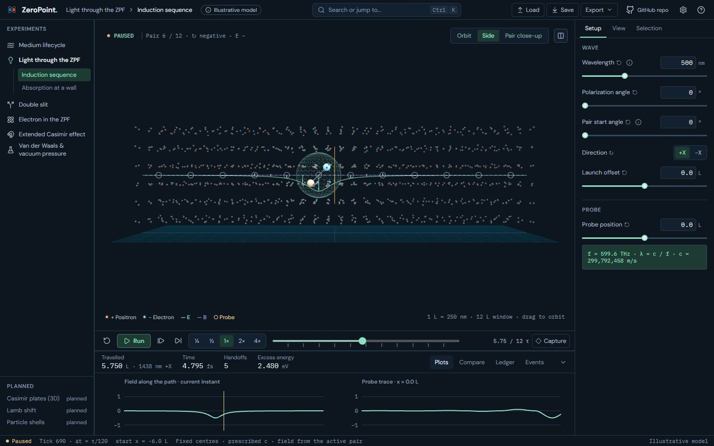
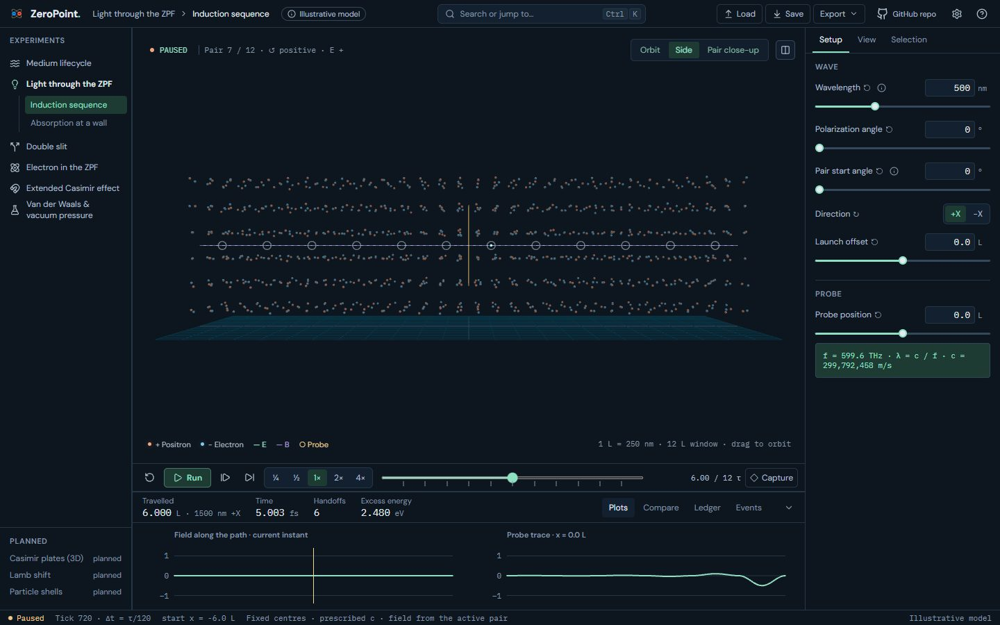
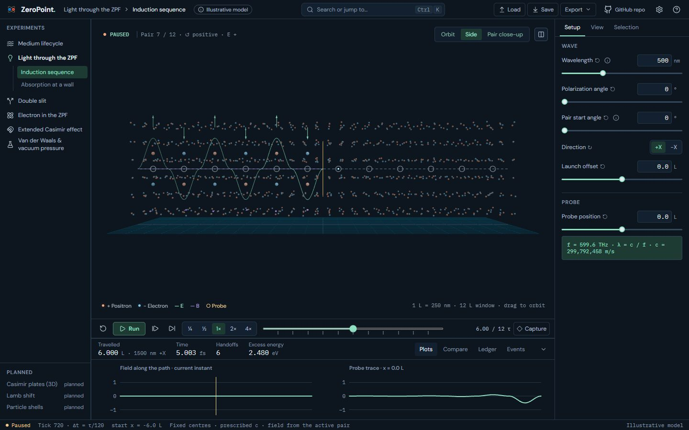
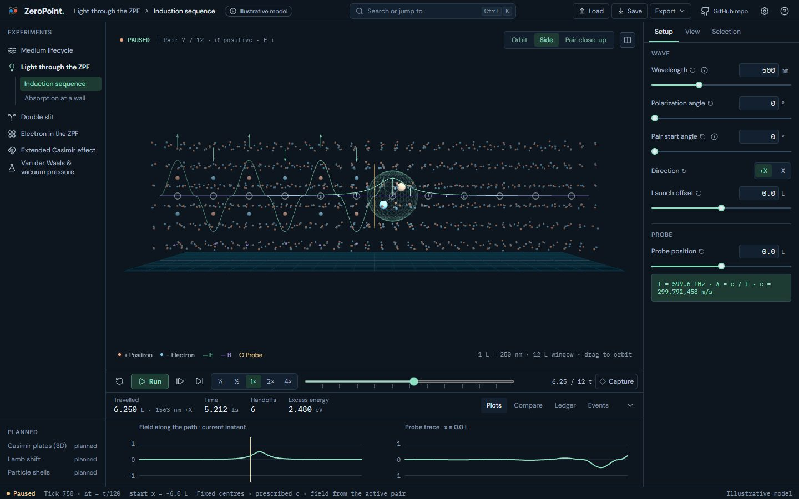
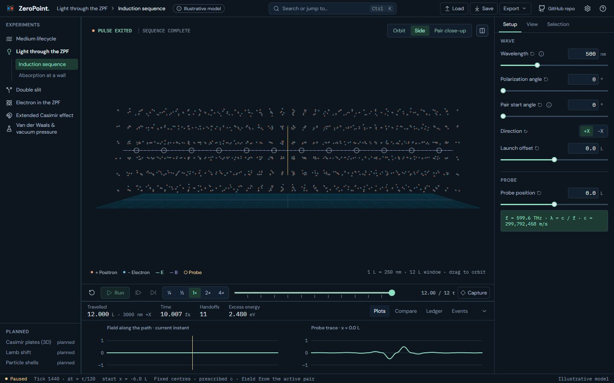
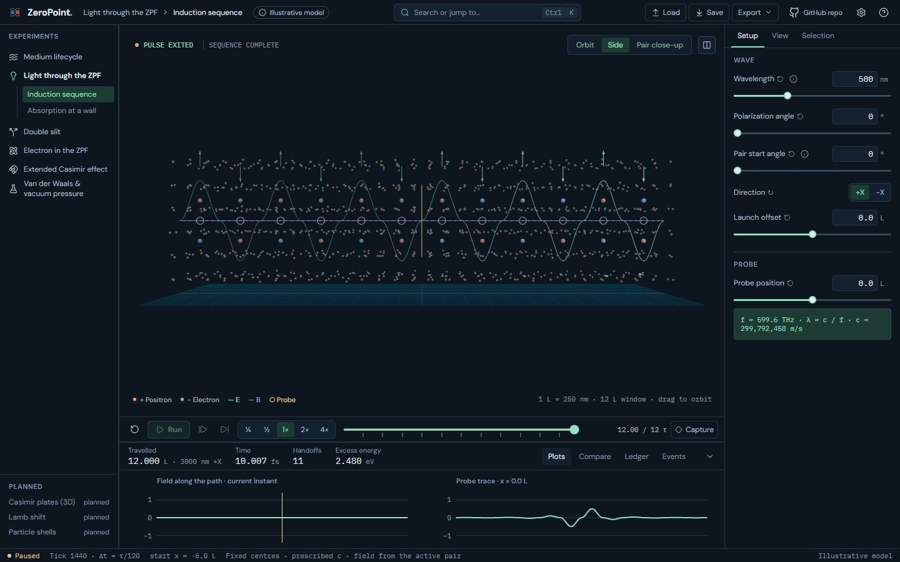
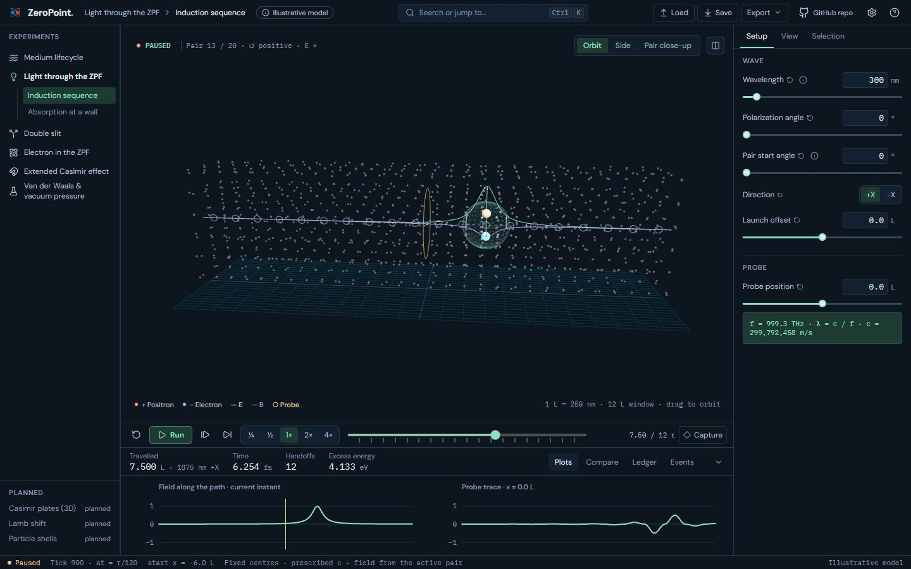
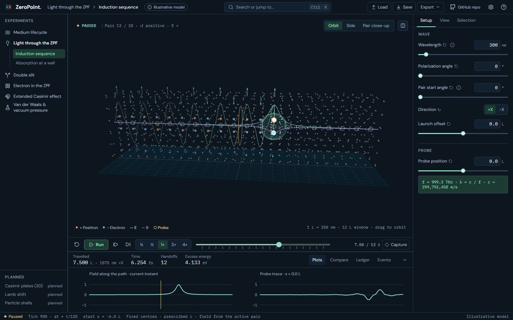
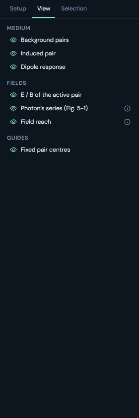
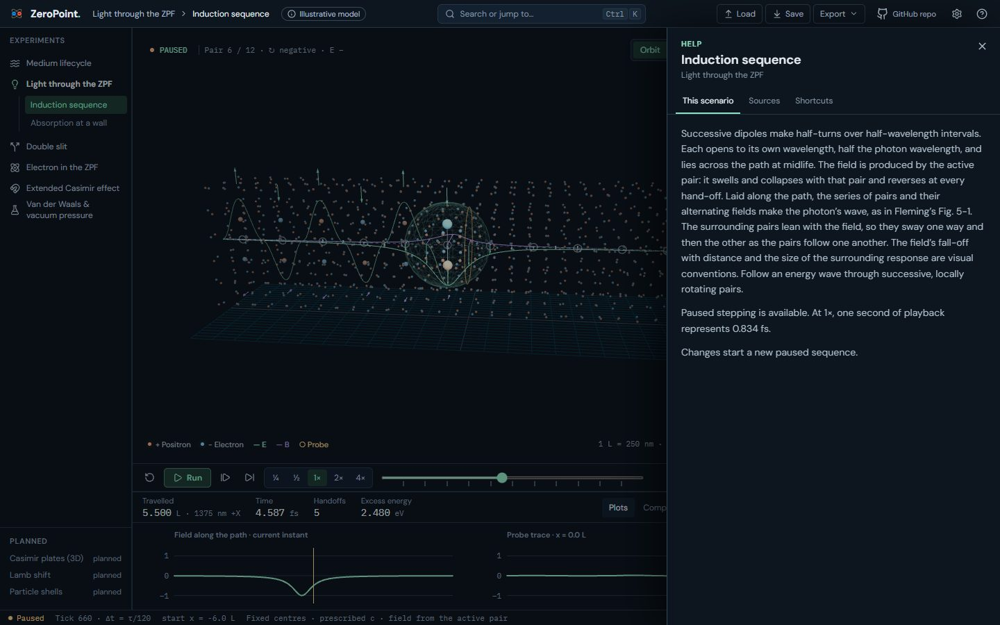

The photon's wave in the Light lab: before and after
Fleming's Fig. 5-1 behind the photon, and the surrounding pairs leaning with the field
Real screens: "before" runs the worktree given as --before (usually the layer below), and "after" runs this one. Click an image to open it at full size. Regenerate with node scripts/compare-screens.mjs --before ../before-light-wave --out docs/ui-previews/light-wave --set light-wave --title 'The photon'\''s wave in the Light lab' --description 'Fleming'\''s Fig. 5-1 behind the photon, and the surrounding pairs leaning with the field'.
Light · tick 660, orbit: pair 6 at midlife, with the five before it behind the photon


Light · tick 690, side: pair 6 three-quarters through its life



Light · tick 720, side: the hand-off from pair 6 to pair 7, when the field is zero




Light · tick 750, side: pair 7 a quarter through its life, its field reversed



Light · tick 1440, side: the whole series once the photon has left the window




Light · 300 nm, tick 900, orbit: more, smaller pairs per window




Absorption · tick 1440: the series up to the wall after the photon is absorbed


Inspector › View: the new Photon’s series (Fig. 5-1) layer under Fields



Help › This scenario: the series and the swaying medium


